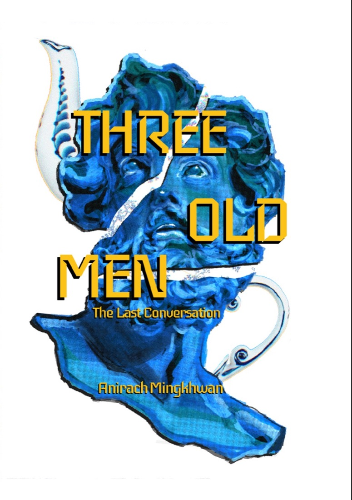
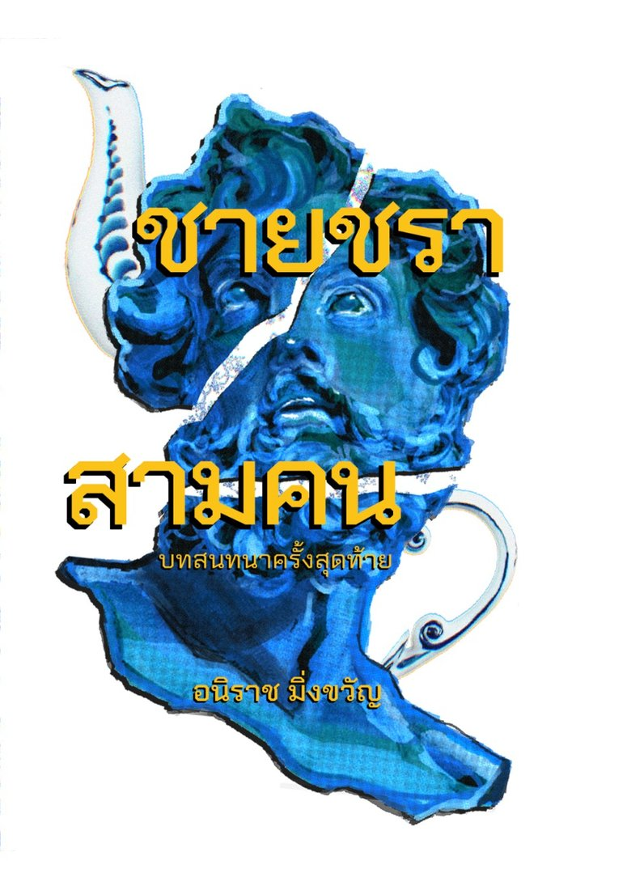
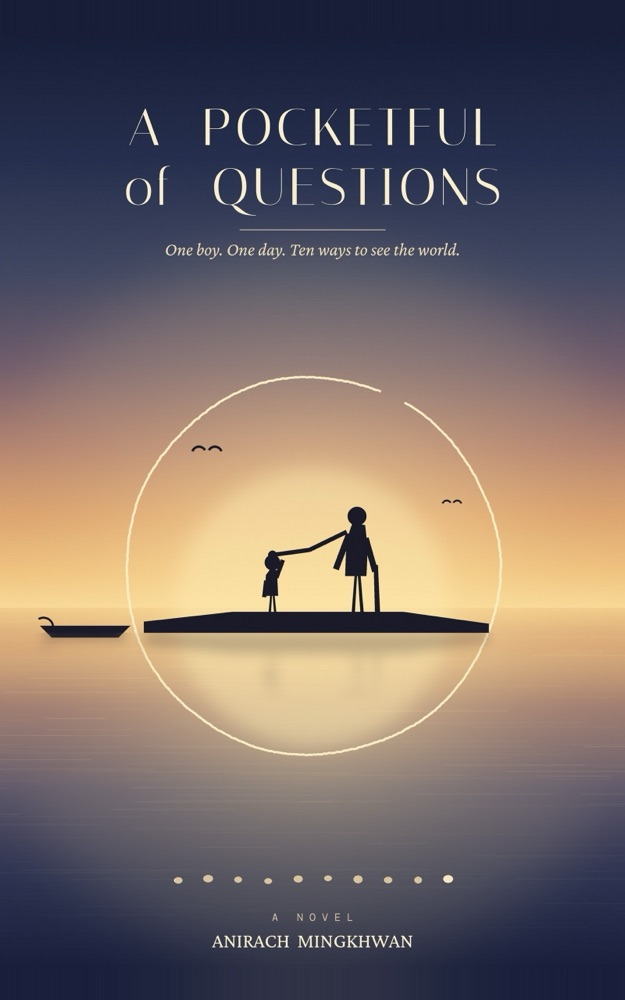
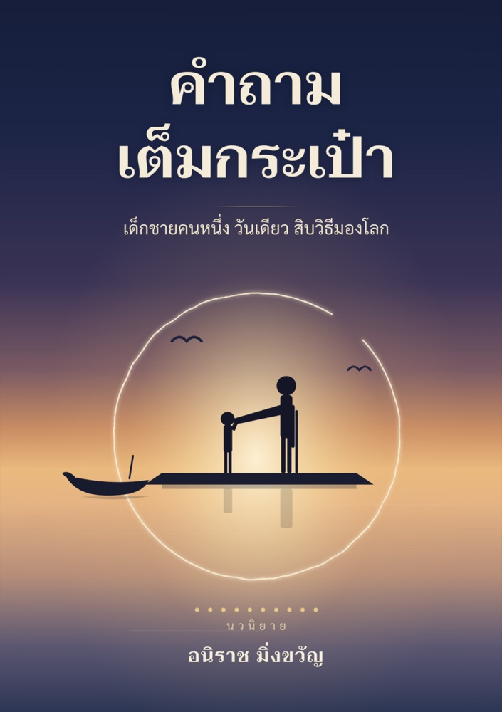

For the Last Lecture


One Day of Light แสงของวันหนึ่ง
A Last Lecture on Life, Work, and What Remains
“Every life is one day long.” A last lecture told as one day of light — morning for the life, noon for the work, twilight for what remains.
สิ่งที่เกิดขึ้นแล้ว ดีทั้งนั้น — หนังสือปัจฉิมกถาที่เล่าชีวิตหนึ่งชีวิตเป็นหนึ่งวัน ตั้งแต่รุ่งเช้า เที่ยงวัน จนถึงแสงสนธยา
Details →Published


Three Old Men: The Last Conversation ชายชราสามคน บทสนทนาครั้งสุดท้าย
Three old friends, one table by the window of a tea house on Charoen Krung Road, and thirty years of the conversations most of us keep meaning to have. The preface and Chapter One are free to read; the printed book is 200 baht.
เพื่อนเก่าสามคนนัดพบกันที่ร้านน้ำชาบนถนนเจริญกรุง กรุงเทพฯ นวนิยายว่าด้วยเวลา มิตรภาพ และบทสนทนาที่มีความหมาย — อ่านคำนำและบทที่หนึ่งได้ฟรี เล่มพิมพ์ราคา 200 บาท
Details →Manuscripts
Both are finished in English and Thai. Neither has a publisher or an ISBN yet.
ต้นฉบับทั้งสองเรื่องเขียนเสร็จแล้วทั้งภาษาอังกฤษและภาษาไทย ยังไม่มีสำนักพิมพ์และยังไม่มีเลข ISBN


A Pocketful of Questions คำถามเต็มกระเป๋า
One boy. One day. Ten ways to see the world.
Plato, Aristotle, Zeno, the Buddha, Confucius, Laozi, Descartes, Locke, Sartre, James and Dewey turn up as neighbours during a boy's Saturday in a riverside Thai village.
หนึ่งวันเสาร์ในหมู่บ้านริมน้ำของไทย เด็กชายคนหนึ่งได้พบกับนักปรัชญาที่กลายมาเป็นเพื่อนบ้าน ตั้งแต่เพลโตจนถึงดิวอี้ นิทานปรัชญาสำหรับผู้อ่านวัยมัธยมต้น
Details →

The Thirteenth Seal ตราประทับที่สิบสาม
A literary crime novel set in Tokyo, spanning three decades of corporate life.
นวนิยายอาชญากรรมเชิงวรรณกรรม ฉากหลังคือกรุงโตเกียวที่ทอดยาวข้ามสามทศวรรษ
Details →Academic Work
The academic record — Libraries in Transformation: Navigating to AI-Powered Libraries (Springer, 2024), the book chapters, and the selected papers — has moved to its own page.
งานเขียนทางวิชาการ ทั้งหนังสือ Libraries in Transformation: Navigating to AI-Powered Libraries (Springer, 2024) บทในหนังสือ และบทความที่คัดสรร ย้ายไปอยู่ในหน้าของตัวเองแล้ว
Go to Publications ›